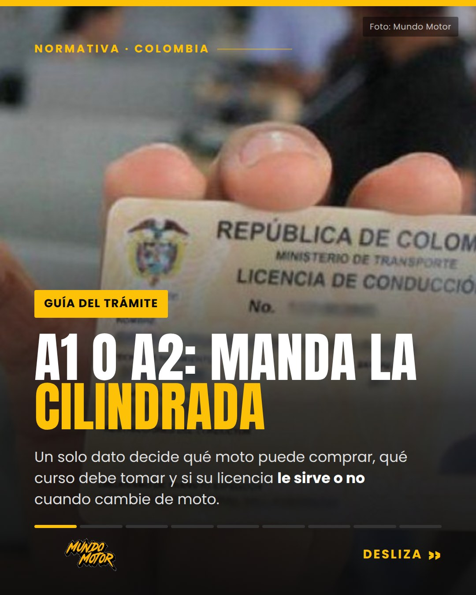
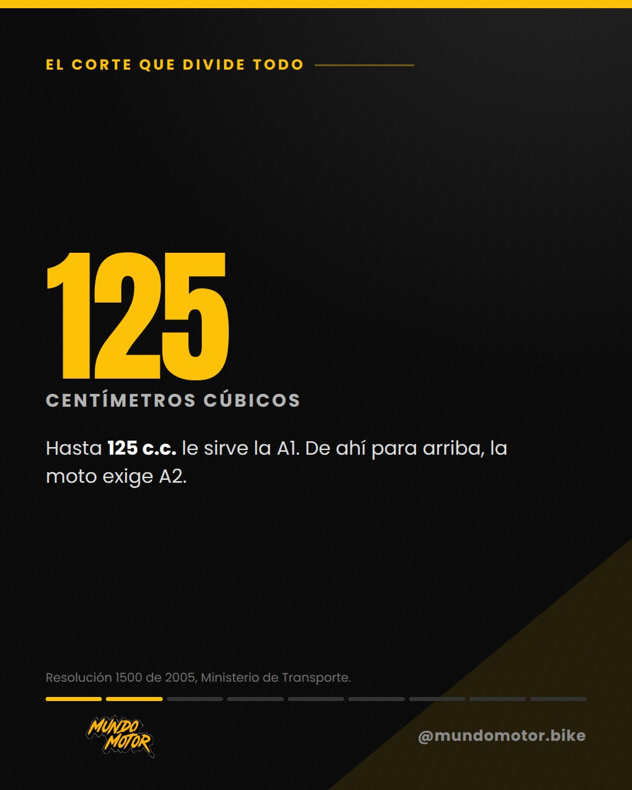
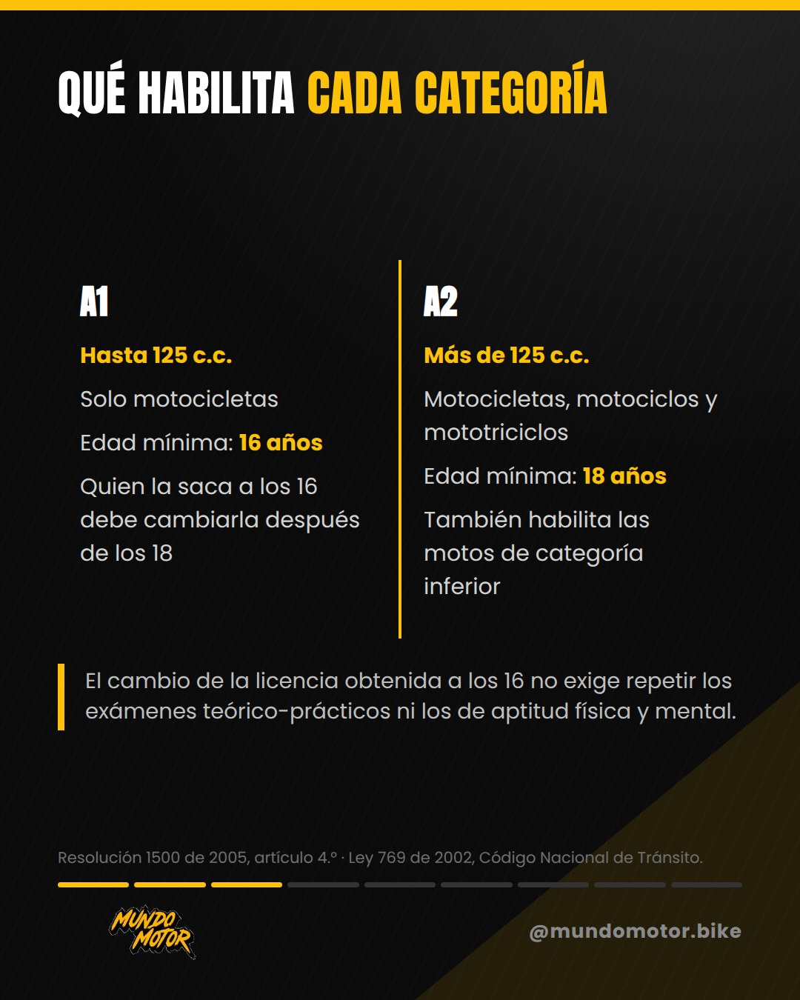
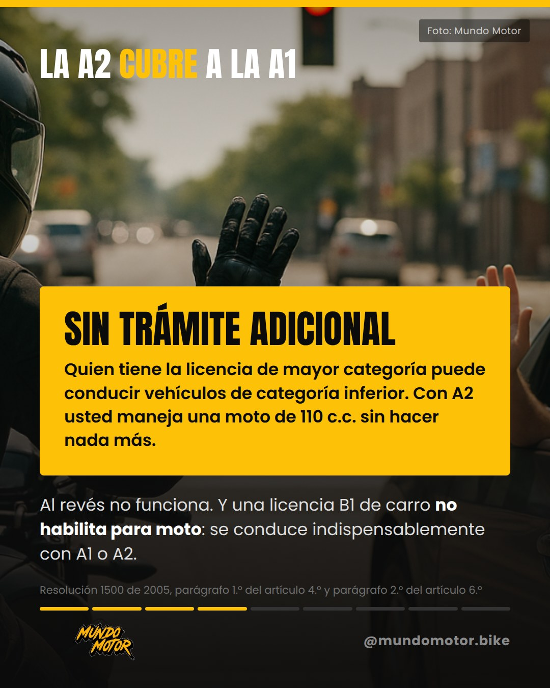
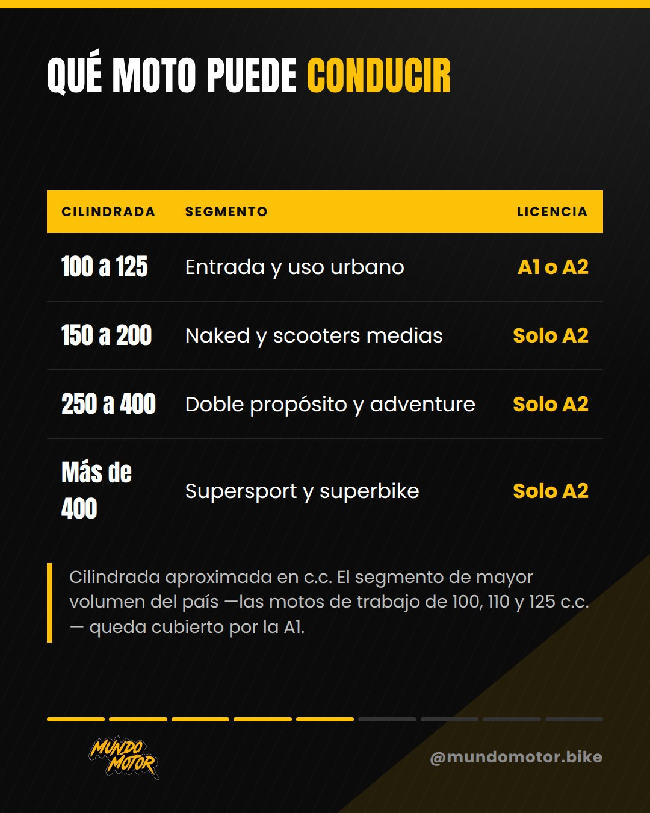
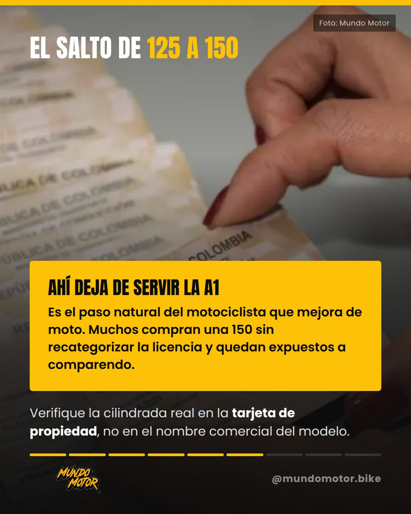
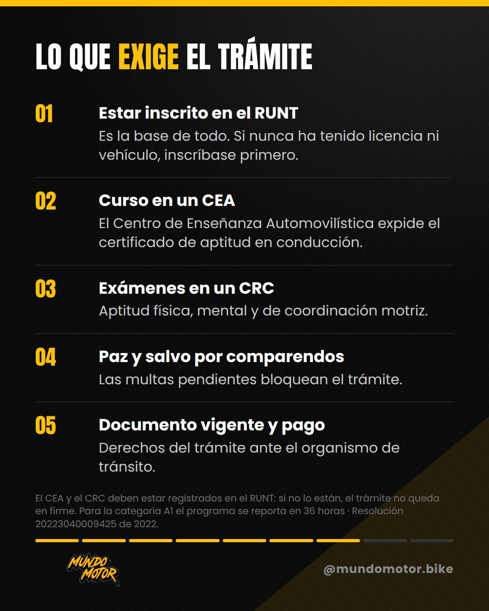
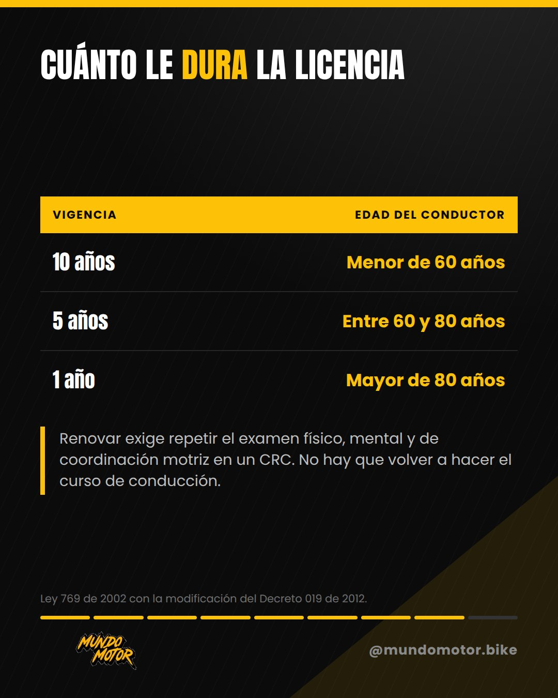
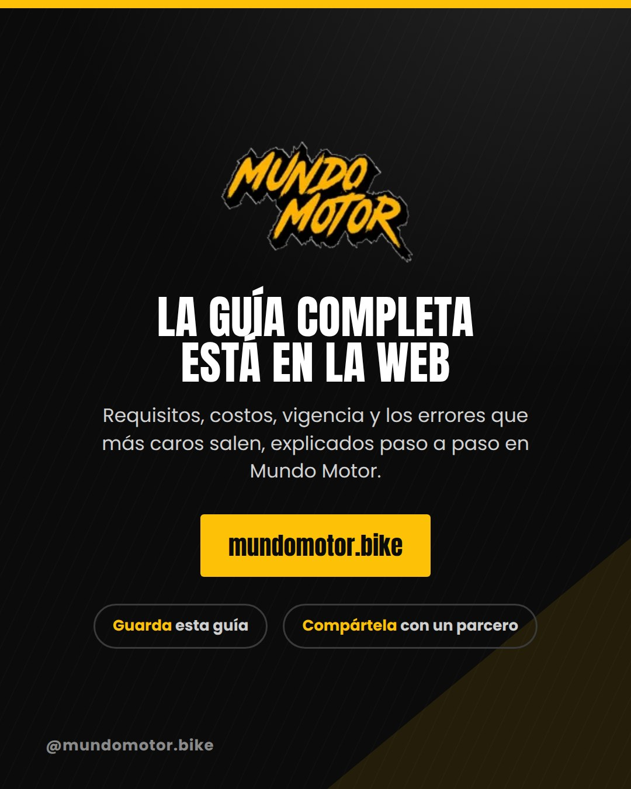

Licencia a1 a2









Ver el copy con el que salió
Si pasa de una 125 a una 150, su licencia A1 deja de habilitarlo el día que saca la moto del concesionario. La categoría A1 habilita para motocicletas de hasta 125 c.c. La A2 cubre motocicletas, motociclos y mototriciclos de más de 125 c.c. Con A2 usted puede manejar una moto de 110 c.c. sin trámite adicional; al revés no funciona. Y la cilindrada que cuenta es la de la tarjeta de propiedad, no la del nombre comercial. Guarde el carrusel antes de ir a tramitar: adentro están los requisitos, la vigencia por edad y qué moto habilita cada categoría. ¿Con cuál de las dos anda usted? Fuentes: Ministerio de Transporte y Código Nacional de Tránsito. Guía completa, en el enlace de la biografía. #LicenciaDeMoto #MotosColombia #RUNT